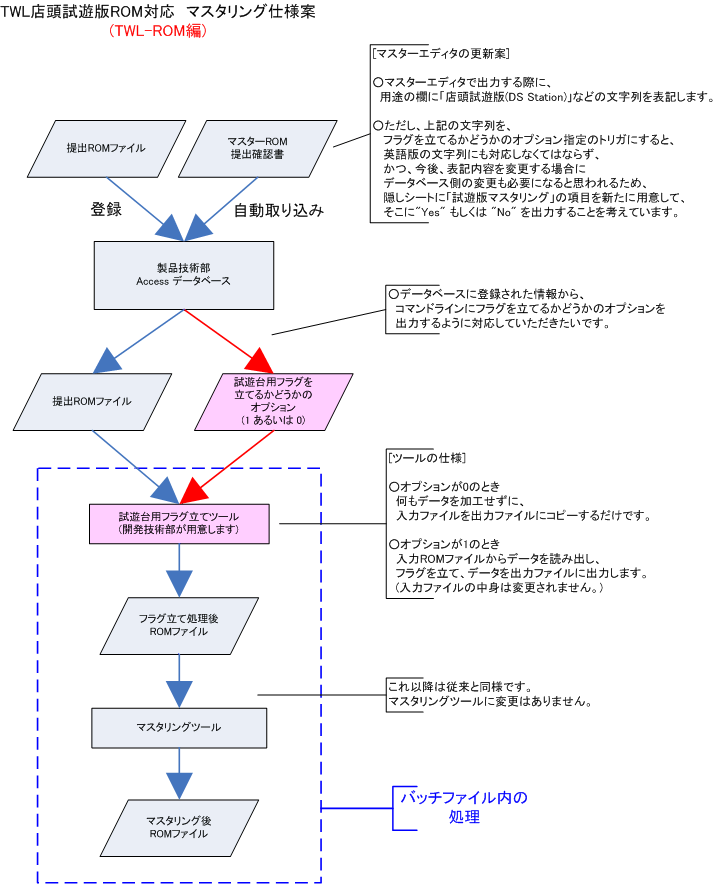
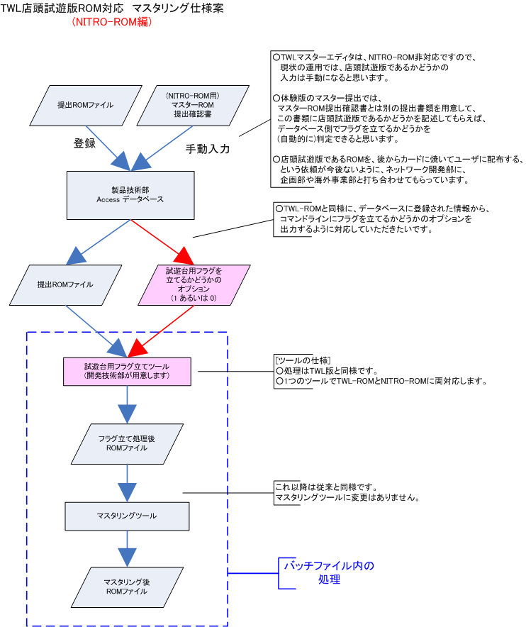

TWL試遊台(新たなDS Station)が7月から運用される予定なのですが、 店頭試遊版(DS Stationに設置された本体上で、お客様に遊んでいただく体験版)では、 本体起動時に表示される「健康と安全について」の画面と、 DSiメニューをスキップさせる必要があります。
メニューをスキップさせるには、ROM内のビット(フラグ)を立てる必要があります。 このフラグ立てを製品技術部さんでのマスタリング時に行ないたいと考えています。 (開発者の手元でフラグを立てるようにしてしまうと、 メニュー画面をスキップする方法がバレてしまい、セキュリティ上良くないためです。)
ここで、懸念は以下の2つです。
TWL-ROMの場合、マスタエディタから出力されるマスターROM提出確認書に、 店頭試遊版かどうかの情報を埋め込み、 その情報をデータベースに取り込むことによって、 (自動的に)フラグを立てるかどうかの判定ができると考えています。
詳細を以下の図にまとめます。
TWLマスタエディタは、NITRO-ROM非対応であり、NITRO-ROM用の提出確認書を出力することはできません。 そのため、(現状のままでは)店頭試遊版かどうかの情報を手動入力する必要がある、という懸念があります。
自動化する方法があるとすれば、 マスターROM提出確認書とは別の体験版用の提出書類を提出してもらうようにし、 その中に、店頭試遊版かどうかを記述してもらい、その情報をもとに データベース側でフラグを立てるかどうかを指定する、という方法だと考えています。
詳細を以下の図にまとめます。
上記の案より、フラグを立てるツールを以下の仕様にすることを考えています。
3月に製品技術部 萬谷さん、藤本さんとミーティングさせていただいたところ、 これまでのNITRO体験版では、実際の運用において以下の懸念がありました。
- 店頭試遊台用として提出されたROMを、後からカードに焼いてほしいと依頼されたことがある。
- NOAでは体験版をカードに焼いてユーザに配布している。
上記の2つとも、今後も同様の運用がされるならば、 健康と安全の画面とメニュー画面をスキップしたROMがお客様の手元に渡る可能性があります。
1.については、店頭試遊版として提出されたROMがお客様の手元に渡ることがないように、 連絡書を別途用意するなどの運用を、現在、ネットワーク開発部に 企画部や海外事業部と調整してもらっています。
2.については、NOAから体験版が店頭試遊版として提出されないように、 ネットワーク開発部に調整してもらっています。 また、TWL-ROMについては、マスターエディタの提出ROMの「用途」の項目を細分化して、 間違って提出されないようにするつもりです。